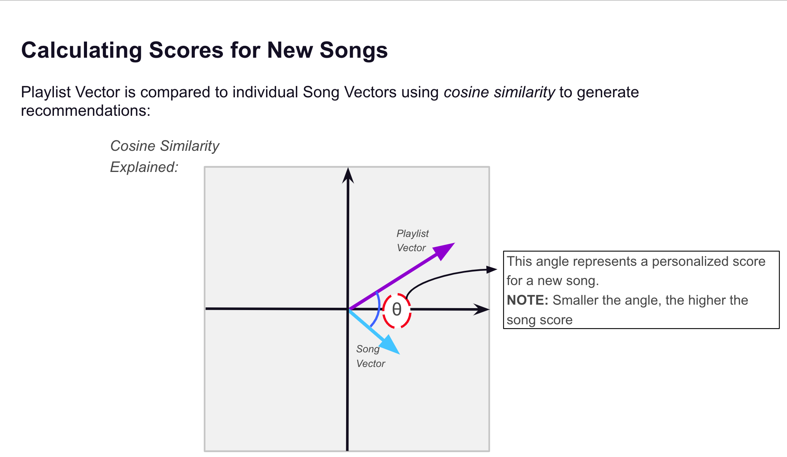

Spotify music recommendation App
spotify recommendation system
Let Stats find you some tracks!!
Table of Contents
About The Project
The aim of this project is to generate song recommendations for a target spotify playlist given a source playlist.
Built With
- This section list major frameworks that is used to built the project.
Methodology

Each song in the source playlist is represented as a vector in the feature space.
- Our feature space consists of 3 major type of song features:
Once we have vector of every song in our source playlist, we summarize all the songs to generate a single vector.
We search for a song vectors in our target playlist, which are most similar to our source playlist vector.
TF-IDF
In information retrieval, tf–idf, TF*IDF, or TFIDF, short for term frequency–inverse document frequency, is a numerical statistic that is intended to reflect how important a word is to a document in a collection or corpus.[1] It is often used as a weighting factor in searches of information retrieval, text mining, and user modeling.
Getting Started
This is an example of how you may give instructions on setting up your project locally. To get a local copy up and running follow these simple example steps.
Prerequisites
You will need to setup a spotify developers account and create an app over there. Once you are done with that, you will receive a CLIENT_ID and CLIENT_SECRET which will help you to pull data from spotify account.
In server.py file replace fill these feilds as displayed in your app
```
client_id = '2ab55afd64cd4a9a86bb74e93a4f75f5'
client_secret = '20d4708024db41d6a193b4d03e08d55e'
```
You will also need to edit seeting on your dashboard and fill out redirect URI field in the Edit Settings section.
This redirect URI shoild be same as in util.prompt_for_user_token
```
util.prompt_for_user_token(scope, client_id=client_id, client_secret=client_secret,
redirect_uri='http://google.com/')
```
Usage
- The first step will be to start the flask server. Follow these steps:
```
python util.py (your spotify user URI)
```
for example my user URI is : spotify:user:7ur7jjowtivgnatopjff8102l
```
python util.py 7ur7jjowtivgnatopjff8102l
```
You can access playlist URI like this

You can launch the app in the browser using client/index.html file. Once you launch the app in the browser the source playlist URI goes in the left text field and the target playlist URI goes in right text field. Hit search